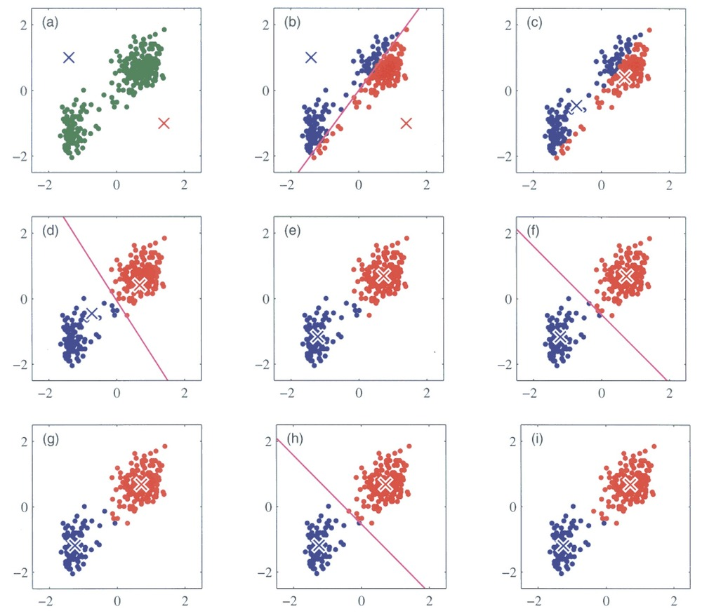
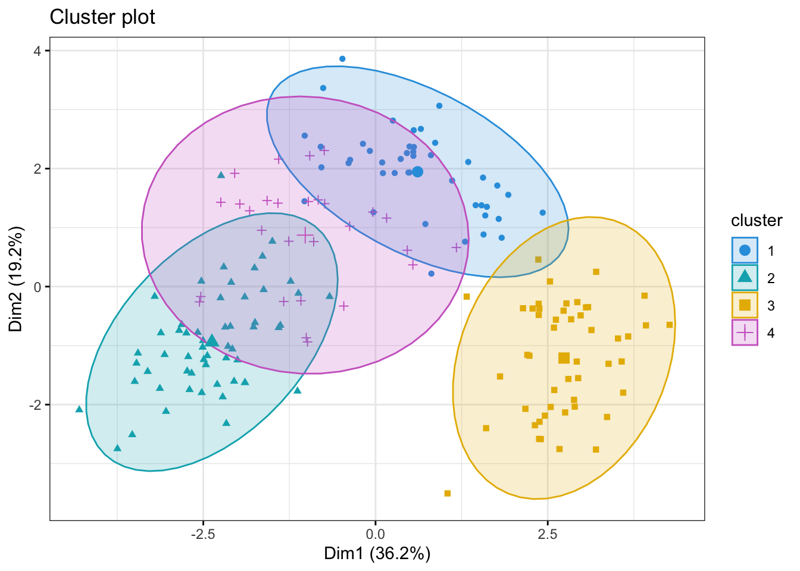
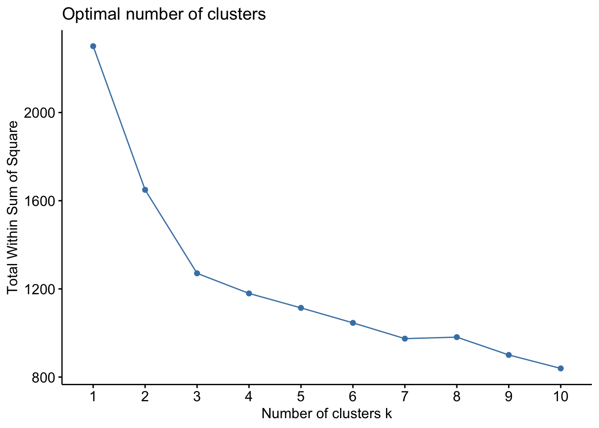
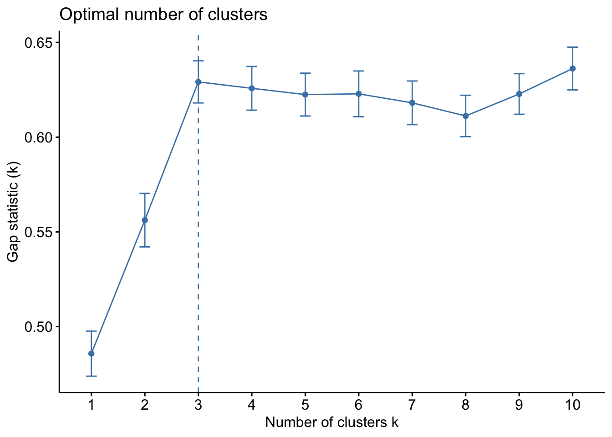
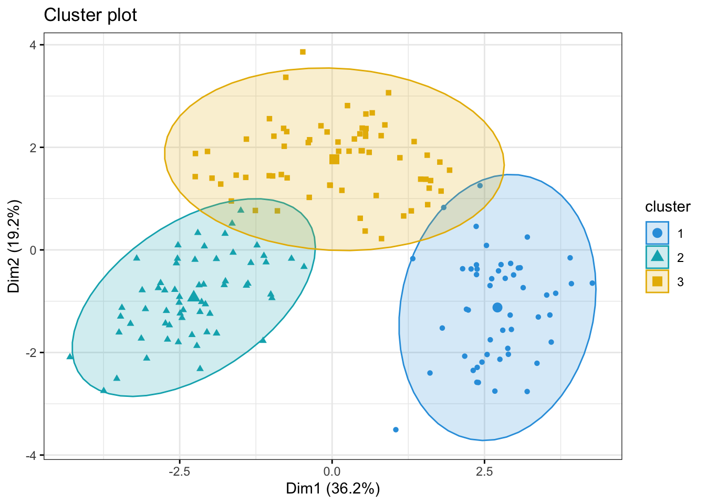
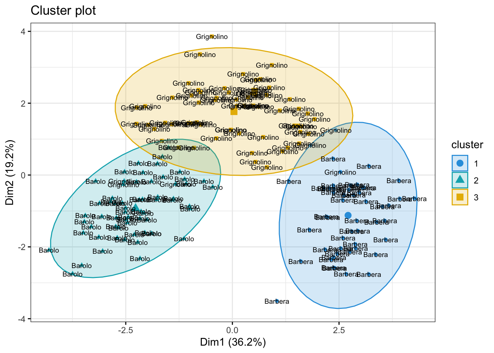
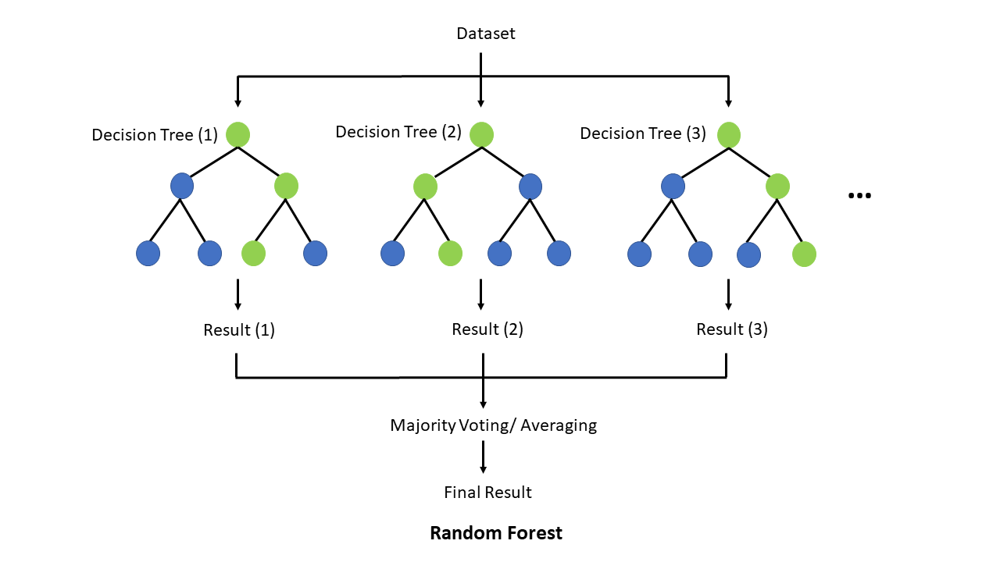
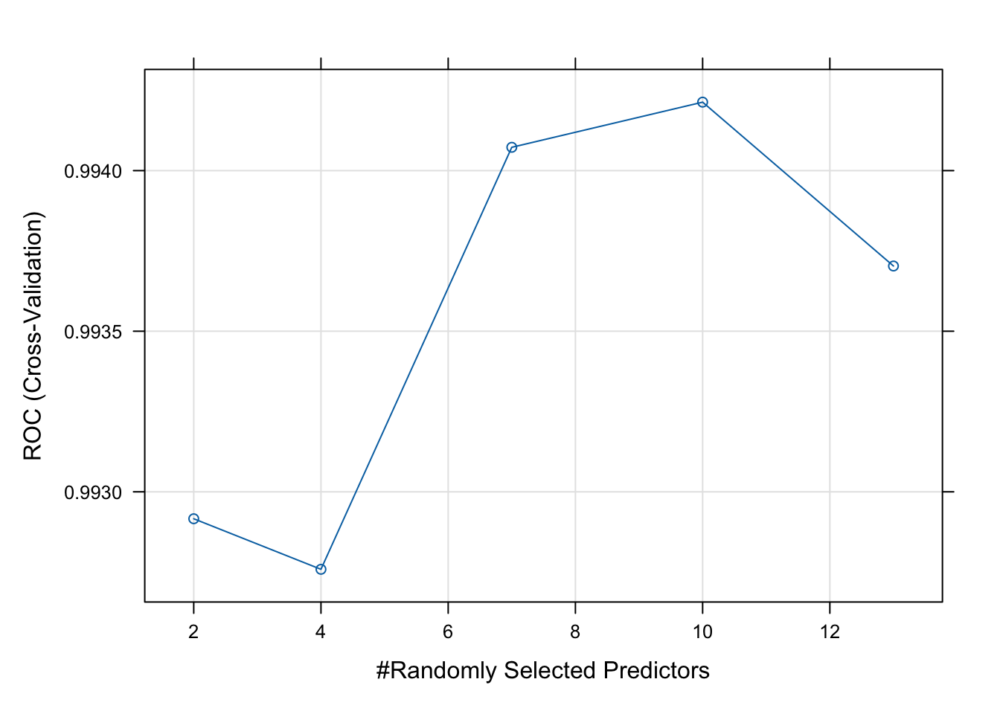

library(tidyverse)
library(ggplot2)
library(ContaminatedMixt)
library(factoextra)Presentation 5B: Kmeans and Random Forest
Part 1: K-means Clustering
Clustering is a type of unsupervised learning technique used to group similar data points together based on their features. The goal is to find inherent patterns or structures within the data, e.g. to see whether the data points fall into distinct groups with distinct features or not.
Wine dataset
For this we will use the wine data set as an example:
Let’s load in the dataset
data('wine') #load dataset
df_wine <- wine %>% as_tibble() #convert to tibble
df_wine# A tibble: 178 × 14
Type Alcohol Malic Ash Alcalinity Magnesium Phenols Flavanoids
<fct> <dbl> <dbl> <dbl> <dbl> <int> <dbl> <dbl>
1 Barolo 14.2 1.71 2.43 15.6 127 2.8 3.06
2 Barolo 13.2 1.78 2.14 11.2 100 2.65 2.76
3 Barolo 13.2 2.36 2.67 18.6 101 2.8 3.24
4 Barolo 14.4 1.95 2.5 16.8 113 3.85 3.49
5 Barolo 13.2 2.59 2.87 21 118 2.8 2.69
6 Barolo 14.2 1.76 2.45 15.2 112 3.27 3.39
7 Barolo 14.4 1.87 2.45 14.6 96 2.5 2.52
8 Barolo 14.1 2.15 2.61 17.6 121 2.6 2.51
9 Barolo 14.8 1.64 2.17 14 97 2.8 2.98
10 Barolo 13.9 1.35 2.27 16 98 2.98 3.15
# ℹ 168 more rows
# ℹ 6 more variables: Nonflavanoid <dbl>, Proanthocyanins <dbl>, Color <dbl>,
# Hue <dbl>, Dilution <dbl>, Proline <int>This dataset contains 178 wine, each corresponding to one of three different cultivars of wine. It has 13 numerical columns that record different features of the wine.
We will try out a popular method, k-means clustering. It works by initializing K centroids and assigning each data point to the nearest centroid. The algorithm then recalculates the centroids as the mean of the points in each cluster, repeating the process until the clusters stabilize. You can see an illustration of the process below. Its weakness is that we need to define the number of centroids, i.e. clusters, beforehand.

Running k-means
For k-means it is very important that the data is numeric and scaled so we will do that before running the algorithm.
# Set seed to ensure reproducibility
set.seed(123)
# Pull numeric variables and scale these
kmeans_df <- df_wine %>%
dplyr::select(where(is.numeric)) %>%
mutate(across(everything(), scale))
kmeans_df# A tibble: 178 × 13
Alcohol[,1] Malic[,1] Ash[,1] Alcalinity[,1] Magnesium[,1] Phenols[,1]
<dbl> <dbl> <dbl> <dbl> <dbl> <dbl>
1 1.51 -0.561 0.231 -1.17 1.91 0.807
2 0.246 -0.498 -0.826 -2.48 0.0181 0.567
3 0.196 0.0212 1.11 -0.268 0.0881 0.807
4 1.69 -0.346 0.487 -0.807 0.928 2.48
5 0.295 0.227 1.84 0.451 1.28 0.807
6 1.48 -0.516 0.304 -1.29 0.858 1.56
7 1.71 -0.417 0.304 -1.47 -0.262 0.327
8 1.30 -0.167 0.888 -0.567 1.49 0.487
9 2.25 -0.623 -0.716 -1.65 -0.192 0.807
10 1.06 -0.883 -0.352 -1.05 -0.122 1.09
# ℹ 168 more rows
# ℹ 7 more variables: Flavanoids <dbl[,1]>, Nonflavanoid <dbl[,1]>,
# Proanthocyanins <dbl[,1]>, Color <dbl[,1]>, Hue <dbl[,1]>,
# Dilution <dbl[,1]>, Proline <dbl[,1]>K-means clustering in R is easy, we simply run the kmeans() function:
set.seed(123)
kmeans_res <- kmeans_df %>%
kmeans(centers = 4, nstart = 25)
kmeans_resK-means clustering with 4 clusters of sizes 45, 56, 49, 28
Cluster means:
Alcohol Malic Ash Alcalinity Magnesium Phenols
1 -0.9051690 -0.53898599 -0.6498944 0.1592193 -0.71473842 -0.4537841
2 0.9580555 -0.37748461 0.1969019 -0.8214121 0.39943022 0.9000233
3 0.1860184 0.90242582 0.2485092 0.5820616 -0.05049296 -0.9857762
4 -0.7869073 0.04195151 0.2157781 0.3683284 0.43818899 0.6543578
Flavanoids Nonflavanoid Proanthocyanins Color Hue Dilution
1 -0.2408779 0.3315072 -0.4329238 -0.9177666 0.5202140 0.07869143
2 0.9848901 -0.6204018 0.5575193 0.2423047 0.4799084 0.76926636
3 -1.2327174 0.7148253 -0.7474990 0.9857177 -1.1879477 -1.29787850
4 0.5746004 -0.5429201 0.8888549 -0.7346332 0.2830335 0.60628629
Proline
1 -0.7820425
2 1.2184972
3 -0.3789756
4 -0.5169332
Clustering vector:
[1] 2 2 2 2 4 2 2 2 2 2 2 2 2 2 2 2 2 2 2 2 2 4 2 2 2 4 2 2 2 2 2 2 2 2 2 2 2
[38] 2 2 2 2 2 2 4 2 2 2 2 2 2 2 2 2 2 2 2 2 2 2 1 1 1 1 4 1 4 2 1 1 4 1 4 1 4
[75] 4 1 1 1 4 4 1 1 1 3 4 1 1 1 1 1 1 1 1 4 4 4 4 1 4 4 1 1 4 1 1 1 1 1 1 4 4
[112] 1 1 1 1 1 1 1 1 1 4 4 4 4 4 1 4 1 1 1 3 3 3 3 3 3 3 3 3 3 3 3 3 3 3 3 3 3
[149] 3 3 3 3 3 3 3 3 3 3 3 3 3 3 3 3 3 3 3 3 3 3 3 3 3 3 3 3 3 3
Within cluster sum of squares by cluster:
[1] 289.9515 268.5747 302.9915 307.0966
(between_SS / total_SS = 49.2 %)
Available components:
[1] "cluster" "centers" "totss" "withinss" "tot.withinss"
[6] "betweenss" "size" "iter" "ifault" We can call kmeans_res$centers to inspect the values of the centroids. For example the center of cluster 1 is placed at the coordinates -0.79 for Alcohol, 0.04 for Malic Acid, 0.22 for Ash and so on. Since our data has 13 dimensions, i.e. features, the cluster centers also do.
This is not super practical if we would like to visually inspect the clustering since we cannot plot in 13 dimensions. How could we solve this?
Visualizing k-means results
We would like to see where our wine bottles and their clusters lie in a low-dimensional space. This can easily be done using the fviz_cluster()
fviz_cluster(object = kmeans_res,
data = kmeans_df,
palette = c("#2E9FDF", "#00AFBB", "#E7B800", "orchid3"),
geom = "point",
ellipse.type = "norm",
ggtheme = theme_bw())
Optimal number of clusters
There are several ways to investigate the ideal number of clusters and fviz_nbclust from the factoextra package provides three of them:
The so-called elbow method observes how the sum of squared errors (sse) changes as we vary the number of clusters. This is also sometimes referred to as “within sum of square” (wss).
kmeans_df %>%
fviz_nbclust(kmeans, method = "wss")
The gap statistic compares the within-cluster variation (how compact the clusters are) for different values of K to the expected variation under a null reference distribution (i.e., random clustering).
kmeans_df %>%
fviz_nbclust(kmeans, method = "gap_stat")
Both of these tell us that there should be three clusters and we also know that there are three cultivars of wine in the dataset. Let’s redo k-means with three centroids.
# Set seed to ensure reproducibility
set.seed(123)
#run kmeans
kmeans_res <- kmeans_df %>%
kmeans(centers = 3, nstart = 25)#add updated cluster info to the dataframe
fviz_cluster(kmeans_res, data = kmeans_df,
palette = c("#2E9FDF", "#00AFBB", "#E7B800"),
geom = "point",
ellipse.type = "norm",
ggtheme = theme_bw())
Now, some obvious questions to ask might be (I) how do the clusters relate to the three cultivars of wine in the dataset? and (II) which variables are mainly driving the clustering?
Question (I) can be can be answered somewhat easily simply by coloring the clusters according to wine label or adding the label to the points in the plot above.
fzPlot <- fviz_cluster(kmeans_res, data = kmeans_df,
palette = c("#2E9FDF", "#00AFBB", "#E7B800"),
geom = "point",
ellipse.type = "norm",
ggtheme = theme_bw())
wine_labs <- transform(fzPlot$data,
my_label = df_wine$Type)
fzPlot + geom_text(data = wine_labs,
aes(label = my_label), size = 2.5)
The answer to question (II) is a bit more tricky. One way to get a sense of which variables may be contributing to the clustering is to examine the variance of the cluster centers across variables. A higher variance suggests that the cluster centroids differ more on that variable, so that variable may be playing a larger role in separating the clusters.
Note: This is only a descriptive heuristic, not a statistical test. Unlike PCA, k-means does not produce loadings, so there is no direct measure of variable importance in the same sense.
var_importance <- apply(kmeans_res$centers, 2, var)
sort(var_importance, decreasing = TRUE) Flavanoids Dilution Proline Hue Phenols
1.2020837 1.1590920 0.9941934 0.8835955 0.8645478
Color Alcohol Malic Proanthocyanins Nonflavanoid
0.8523894 0.7858539 0.4957524 0.4680695 0.4169275
Alcalinity Magnesium Ash
0.3351087 0.2888914 0.2045454 Part 2: Random Forest
In this section, we will train a Random Forest (RF) model. Random Forest is a simple ensemble machine learning method that builds multiple decision trees and combines their predictions to improve accuracy and robustness. By averaging the results of many trees, it reduces overfitting and increases generalization, making it particularly effective for complex, non-linear relationships. One of its key strengths is its ability to handle large datasets with many features, while also providing insights into feature importance.

Why do we want to try a RF? Unlike linear, logistic, or elastic net regression (presentation 5C - only if time permits), RF does not require predictors (or model residuals) to be normally distributed, nor does RF assume a linear relationship between predictors and the outcome — it can naturally capture non-linear patterns and complex interactions between variables.
Another advantage is that RF considers one predictor at a time when splitting at a predictor, making it robust to differences in variable scales and allowing it to handle categorical variables directly.
The downside to a is RF model is that it typically require a reasonably large sample size to perform well and can be less interpretable compared to regression-based approaches.
First and foremost, lets load the R packages needed for analysis:
library(tidyverse)
library(caret)
library(randomForest)For this exercise we will use a dataset from patients with Heart Disease. Information on the columns in the dataset can be found here.
HD <- read_csv("../data/HeartDisease.csv")
head(HD)# A tibble: 6 × 14
age sex chestPainType restBP chol fastingBP restElecCardio maxHR
<dbl> <dbl> <dbl> <dbl> <dbl> <dbl> <dbl> <dbl>
1 52 1 0 125 212 0 1 168
2 53 1 0 140 203 1 0 155
3 70 1 0 145 174 0 1 125
4 61 1 0 148 203 0 1 161
5 62 0 0 138 294 1 1 106
6 58 0 0 100 248 0 0 122
# ℹ 6 more variables: exerciseAngina <dbl>, STdepEKG <dbl>,
# slopePeakExST <dbl>, nMajorVessels <dbl>, DefectType <dbl>,
# heartDisease <dbl>Let’s convert some of the variables that are encoded as numeric datatypes but should be factors:
facCols <- c("sex",
"chestPainType",
"fastingBP",
"restElecCardio",
"exerciseAngina",
"slopePeakExST",
"DefectType",
"heartDisease")
HD <- HD %>%
mutate(across(all_of(facCols), as.factor))
head(HD)# A tibble: 6 × 14
age sex chestPainType restBP chol fastingBP restElecCardio maxHR
<dbl> <fct> <fct> <dbl> <dbl> <fct> <fct> <dbl>
1 52 1 0 125 212 0 1 168
2 53 1 0 140 203 1 0 155
3 70 1 0 145 174 0 1 125
4 61 1 0 148 203 0 1 161
5 62 0 0 138 294 1 1 106
6 58 0 0 100 248 0 0 122
# ℹ 6 more variables: exerciseAngina <fct>, STdepEKG <dbl>,
# slopePeakExST <fct>, nMajorVessels <dbl>, DefectType <fct>,
# heartDisease <fct>Next, let’s do some summary statistics to have a look at the variables we have in our dataset. Firstly, the numeric columns. We can get a quick overview of variable distributions and ranges with some histograms.
# Reshape data to long format for ggplot2
long_data <- HD %>%
dplyr::select(where(is.numeric)) %>%
pivot_longer(cols = everything(),
names_to = "variable",
values_to = "value")
head(long_data)# A tibble: 6 × 2
variable value
<chr> <dbl>
1 age 52
2 restBP 125
3 chol 212
4 maxHR 168
5 STdepEKG 1
6 nMajorVessels 2# Plot histograms for each numeric variable in one grid
ggplot(long_data,
aes(x = value)) +
geom_histogram(binwidth = 0.5, fill = "#9395D3", color ='grey30') +
facet_wrap(vars(variable), scales = "free") +
theme_minimal()
Importantly, let’s check the balance of the categorical/factor variables.
HD %>%
dplyr::select(where(is.factor)) %>%
pivot_longer(everything(), names_to = "Variable", values_to = "Level") %>%
dplyr::count(Variable, Level, name = "Count")# A tibble: 22 × 3
Variable Level Count
<chr> <fct> <int>
1 DefectType 0 7
2 DefectType 1 64
3 DefectType 2 544
4 DefectType 3 410
5 chestPainType 0 497
6 chestPainType 1 167
7 chestPainType 2 284
8 chestPainType 3 77
9 exerciseAngina 0 680
10 exerciseAngina 1 345
# ℹ 12 more rows# OR
# cat_cols <- HD_EN %>% dplyr::select(where(is.factor)) %>% colnames()
#
# for (col in cat_cols){
# print(col)
# print(table(HD_EN[[col]]))
# }From our count table above we see that variables DefectType, chestPainType, restElecCardio, and slopePeakExST are unbalanced. Especially DefectType and restElecCardio are problematic with only 7 and 15 observations for one of the factor levels.
To avoid issues when modelling, we will filter out these observations and re-level the two variables.
HD_RF <- HD %>%
filter(DefectType != "0", restElecCardio != "2") %>%
mutate(DefectType = as.factor(as.character(DefectType)),
restElecCardio = as.factor(as.character(restElecCardio)))
head(HD_RF)# A tibble: 6 × 14
age sex chestPainType restBP chol fastingBP restElecCardio maxHR
<dbl> <fct> <fct> <dbl> <dbl> <fct> <fct> <dbl>
1 52 1 0 125 212 0 1 168
2 53 1 0 140 203 1 0 155
3 70 1 0 145 174 0 1 125
4 61 1 0 148 203 0 1 161
5 62 0 0 138 294 1 1 106
6 58 0 0 100 248 0 0 122
# ℹ 6 more variables: exerciseAngina <fct>, STdepEKG <dbl>,
# slopePeakExST <fct>, nMajorVessels <dbl>, DefectType <fct>,
# heartDisease <fct>In addition to ensuring an at least somewhat balanced data set, RF requires the outcome variable to be a categorical type, meaning we must convert heartDisease from a binary (0 or 1) variables to a category variable.
# Mutate outcome to category and add ID column for splitting
HD_RF <- HD_RF %>%
mutate(heartDisease = fct_recode(heartDisease, noHD = "0", yesHD = "1"))
head(HD_RF$heartDisease)[1] noHD noHD noHD noHD noHD yesHD
Levels: noHD yesHDTrain & Test Set
We split our dataset into train and test set, we will keep 70% of the data in the training set and take out 30% for the test set. Importantly, we must ensure that all levels of each categorical/factor variable are represented in both sets! There are different ways of doing this in R, but one very easy way to achieve a good split is with the createDataPartition() function from caret.
# Set seed to ensure same split when code is re-run
set.seed(123)
#
idx <- createDataPartition(HD_RF$heartDisease, p = 0.7, list = FALSE)
train <- HD_RF[idx, ]
test <- HD_RF[-idx, ]# Split on outcome variable
table(train$heartDisease)
noHD yesHD
339 364 table(test$heartDisease)
noHD yesHD
144 156 In our case, because we have a fairly balanced dataset, we are lucky and all levels of the outcome variable can be represented in both sets. If this was not the case, we might have had to remove some variables (or levels) altogether.
Random Forest Model
Now let’s set up a RF model with cross-validation - this way we do not overfit our model. The R-package caret has a very versatile function trainControl() which can be used with a range of re-sampling methods including bootstrapping, out-of-bag error, and leave-one-out cross-validation.
set.seed(123)
# Set up cross-validation: 5-fold CV
RFcv <- trainControl(
method = "cv",
number = 5,
classProbs = TRUE,
summaryFunction = twoClassSummary,
savePredictions = "final"
)Now that we have set up parameters for cross validation in the RFcv object above, we can feed it to the train() function from the caret packages. We also specify the training data, the name of the outcome variable, and, importantly, that we want to perform random forest (method = "rf") as the train() function can be used for different models.
set.seed(123)
rf_model <- train(
x = train %>% dplyr::select(-heartDisease),
y = train$heartDisease,
method = "rf",
trControl = RFcv,
metric = "Accuracy",
tuneLength = 5,
importance = TRUE
)
print(rf_model)Random Forest
703 samples
13 predictor
2 classes: 'noHD', 'yesHD'
No pre-processing
Resampling: Cross-Validated (5 fold)
Summary of sample sizes: 563, 562, 562, 563, 562
Resampling results across tuning parameters:
mtry ROC Sens Spec
2 0.9929161 0.9645742 0.9945205
4 0.9927587 0.9675154 0.9945205
7 0.9940726 0.9645303 0.9945205
10 0.9942133 0.9645303 0.9945205
13 0.9937031 0.9645303 0.9917808
ROC was used to select the optimal model using the largest value.
The final value used for the model was mtry = 10.Next, we can plot your model fit to see how many explanatory variables significantly contribute to our model.
# Best parameters
rf_model$bestTune mtry
4 10# Plot performance
plot(rf_model)
As we see from the plot above, the model performs best with four variables randomly sampled as candidates at each split (mtry = 4). There are different tuning parameters in a random forest, these include; n_estimators (number of trees), max_features (features to try at splits), max_depth (tree depth), and min_samples_split (minimum number of samples required to split a node).
The tuneLength argument in the train() function specifies how many different values of the tuning parameters to try.
Next, we use the test set to evaluate our model performance. We will do this with the predict function, which will give us the predicted probabilities for each class.
# Predict class probabilities
y_pred <- predict(rf_model, newdata = test, type = "prob")
y_pred noHD yesHD
1 0.994 0.006
2 0.968 0.032
3 0.016 0.984
4 1.000 0.000
5 0.998 0.002
6 1.000 0.000
7 0.000 1.000
8 0.042 0.958
9 0.892 0.108
10 0.062 0.938
11 0.962 0.038
12 0.012 0.988
13 0.990 0.010
14 0.976 0.024
15 0.900 0.100
16 0.016 0.984
17 0.010 0.990
18 0.998 0.002
19 0.034 0.966
20 0.004 0.996
21 0.940 0.060
22 0.004 0.996
23 0.054 0.946
24 0.004 0.996
25 0.970 0.030
26 0.950 0.050
27 0.012 0.988
28 0.000 1.000
29 0.000 1.000
30 0.770 0.230
31 0.996 0.004
32 0.098 0.902
33 1.000 0.000
34 0.048 0.952
35 1.000 0.000
36 0.948 0.052
37 0.022 0.978
38 0.970 0.030
39 0.998 0.002
40 0.990 0.010
41 0.992 0.008
42 1.000 0.000
43 1.000 0.000
44 0.070 0.930
45 0.022 0.978
46 0.008 0.992
47 0.012 0.988
48 0.066 0.934
49 0.228 0.772
50 0.986 0.014
51 0.918 0.082
52 0.014 0.986
53 0.940 0.060
54 0.072 0.928
55 0.992 0.008
56 0.020 0.980
57 1.000 0.000
58 0.006 0.994
59 0.976 0.024
60 0.054 0.946
61 0.012 0.988
62 0.984 0.016
63 0.098 0.902
64 0.226 0.774
65 0.080 0.920
66 0.982 0.018
67 0.072 0.928
68 0.954 0.046
69 0.988 0.012
70 0.988 0.012
71 0.006 0.994
72 0.000 1.000
73 0.994 0.006
74 0.226 0.774
75 0.666 0.334
76 0.010 0.990
77 0.000 1.000
78 0.000 1.000
79 0.994 0.006
80 1.000 0.000
81 0.970 0.030
82 0.994 0.006
83 0.902 0.098
84 0.096 0.904
85 0.980 0.020
86 0.142 0.858
87 0.052 0.948
88 0.000 1.000
89 0.242 0.758
90 0.006 0.994
91 0.000 1.000
92 0.064 0.936
93 0.956 0.044
94 0.010 0.990
95 0.114 0.886
96 0.736 0.264
97 0.022 0.978
98 0.000 1.000
99 1.000 0.000
100 0.990 0.010
101 0.048 0.952
102 0.990 0.010
103 0.134 0.866
104 0.950 0.050
105 0.018 0.982
106 0.900 0.100
107 0.946 0.054
108 0.960 0.040
109 0.012 0.988
110 0.976 0.024
111 0.072 0.928
112 0.878 0.122
113 0.076 0.924
114 1.000 0.000
115 0.000 1.000
116 0.142 0.858
117 0.902 0.098
118 0.984 0.016
119 0.796 0.204
120 1.000 0.000
121 0.994 0.006
122 0.946 0.054
123 0.056 0.944
124 0.962 0.038
125 0.884 0.116
126 0.024 0.976
127 0.242 0.758
128 0.970 0.030
129 0.096 0.904
130 0.008 0.992
131 0.070 0.930
132 0.770 0.230
133 0.966 0.034
134 0.948 0.052
135 0.012 0.988
136 0.072 0.928
137 0.002 0.998
138 0.910 0.090
139 0.010 0.990
140 0.114 0.886
141 0.004 0.996
142 0.878 0.122
143 0.996 0.004
144 0.000 1.000
145 0.952 0.048
146 0.914 0.086
147 0.012 0.988
148 0.006 0.994
149 0.000 1.000
150 0.998 0.002
151 0.056 0.944
152 1.000 0.000
153 0.000 1.000
154 0.980 0.020
155 0.242 0.758
156 0.074 0.926
157 0.948 0.052
158 0.012 0.988
159 0.098 0.902
160 0.228 0.772
161 0.000 1.000
162 0.976 0.024
163 1.000 0.000
164 0.082 0.918
165 0.096 0.904
166 0.968 0.032
167 0.058 0.942
168 0.946 0.054
169 0.976 0.024
170 0.134 0.866
171 0.860 0.140
172 0.948 0.052
173 0.072 0.928
174 0.988 0.012
175 0.986 0.014
176 0.860 0.140
177 0.990 0.010
178 0.158 0.842
179 0.796 0.204
180 0.000 1.000
181 0.006 0.994
182 0.994 0.006
183 0.050 0.950
184 0.954 0.046
185 0.124 0.876
186 0.000 1.000
187 0.006 0.994
188 0.000 1.000
189 0.066 0.934
190 0.998 0.002
191 0.952 0.048
192 0.046 0.954
193 0.020 0.980
194 0.964 0.036
195 0.994 0.006
196 0.884 0.116
197 0.996 0.004
198 0.998 0.002
199 0.008 0.992
200 0.978 0.022
201 0.000 1.000
202 0.968 0.032
203 0.058 0.942
204 0.114 0.886
205 0.010 0.990
206 0.276 0.724
207 0.012 0.988
208 0.000 1.000
209 0.910 0.090
210 0.966 0.034
211 0.002 0.998
212 0.028 0.972
213 0.014 0.986
214 0.066 0.934
215 0.012 0.988
216 0.016 0.984
217 0.990 0.010
218 0.138 0.862
219 0.018 0.982
220 0.666 0.334
221 0.914 0.086
222 0.132 0.868
223 0.006 0.994
224 1.000 0.000
225 0.982 0.018
226 0.038 0.962
227 0.972 0.028
228 0.006 0.994
229 0.228 0.772
230 0.080 0.920
231 0.048 0.952
232 0.012 0.988
233 1.000 0.000
234 0.030 0.970
235 0.998 0.002
236 0.000 1.000
237 0.000 1.000
238 0.072 0.928
239 0.074 0.926
240 0.078 0.922
241 0.276 0.724
242 0.138 0.862
243 0.980 0.020
244 0.966 0.034
245 0.034 0.966
246 0.910 0.090
247 0.882 0.118
248 0.006 0.994
249 0.066 0.934
250 0.000 1.000
251 0.226 0.774
252 0.906 0.094
253 0.914 0.086
254 0.968 0.032
255 1.000 0.000
256 0.110 0.890
257 0.092 0.908
258 0.998 0.002
259 0.064 0.936
260 0.080 0.920
261 0.024 0.976
262 0.012 0.988
263 0.990 0.010
264 0.772 0.228
265 0.976 0.024
266 0.914 0.086
267 0.030 0.970
268 0.980 0.020
269 1.000 0.000
270 1.000 0.000
271 0.736 0.264
272 0.022 0.978
273 0.882 0.118
274 0.002 0.998
275 0.004 0.996
276 0.976 0.024
277 0.976 0.024
278 0.000 1.000
279 0.018 0.982
280 0.140 0.860
281 0.772 0.228
282 0.158 0.842
283 0.858 0.142
284 0.010 0.990
285 0.022 0.978
286 0.042 0.958
287 0.026 0.974
288 0.086 0.914
289 1.000 0.000
290 0.974 0.026
291 0.986 0.014
292 0.096 0.904
293 0.860 0.140
294 0.968 0.032
295 0.736 0.264
296 0.020 0.980
297 0.028 0.972
298 1.000 0.000
299 0.994 0.006
300 0.998 0.002As the output of predict is a probability of belonging to a specific class, we will need to convert these probabilities to class labels (yesHD or noHD). This way we can compare a predicted label with the true label in the test set to evaluate our model performance.
y_pred <- as.factor(ifelse(y_pred$yesHD > 0.5, "yesHD", "noHD"))
caret::confusionMatrix(y_pred, test$heartDisease)Confusion Matrix and Statistics
Reference
Prediction noHD yesHD
noHD 141 0
yesHD 3 156
Accuracy : 0.99
95% CI : (0.9711, 0.9979)
No Information Rate : 0.52
P-Value [Acc > NIR] : <2e-16
Kappa : 0.98
Mcnemar's Test P-Value : 0.2482
Sensitivity : 0.9792
Specificity : 1.0000
Pos Pred Value : 1.0000
Neg Pred Value : 0.9811
Prevalence : 0.4800
Detection Rate : 0.4700
Detection Prevalence : 0.4700
Balanced Accuracy : 0.9896
'Positive' Class : noHD
Lastly, we can extract the predictive variables with the greatest importance from your fit.
varImpOut <- varImp(rf_model)
varImpOut$importance noHD yesHD
age 62.08613 62.08613
sex 30.02973 30.02973
chestPainType 94.83905 94.83905
restBP 65.98055 65.98055
chol 75.11579 75.11579
fastingBP 0.00000 0.00000
restElecCardio 20.85050 20.85050
maxHR 63.45448 63.45448
exerciseAngina 12.77844 12.77844
STdepEKG 93.18319 93.18319
slopePeakExST 31.04470 31.04470
nMajorVessels 96.73773 96.73773
DefectType 100.00000 100.00000# Order by importance
varImportance <- as.data.frame(as.matrix(varImpOut$importance)) %>%
rownames_to_column(var = 'VarName') %>%
arrange(desc(yesHD))
varImportance VarName noHD yesHD
1 DefectType 100.00000 100.00000
2 nMajorVessels 96.73773 96.73773
3 chestPainType 94.83905 94.83905
4 STdepEKG 93.18319 93.18319
5 chol 75.11579 75.11579
6 restBP 65.98055 65.98055
7 maxHR 63.45448 63.45448
8 age 62.08613 62.08613
9 slopePeakExST 31.04470 31.04470
10 sex 30.02973 30.02973
11 restElecCardio 20.85050 20.85050
12 exerciseAngina 12.77844 12.77844
13 fastingBP 0.00000 0.00000Variable importance is based on how much each variable improves the model’s accuracy across splits. Variables nMajorVessels and DefectType appear to be highlight predictive of heart disease.